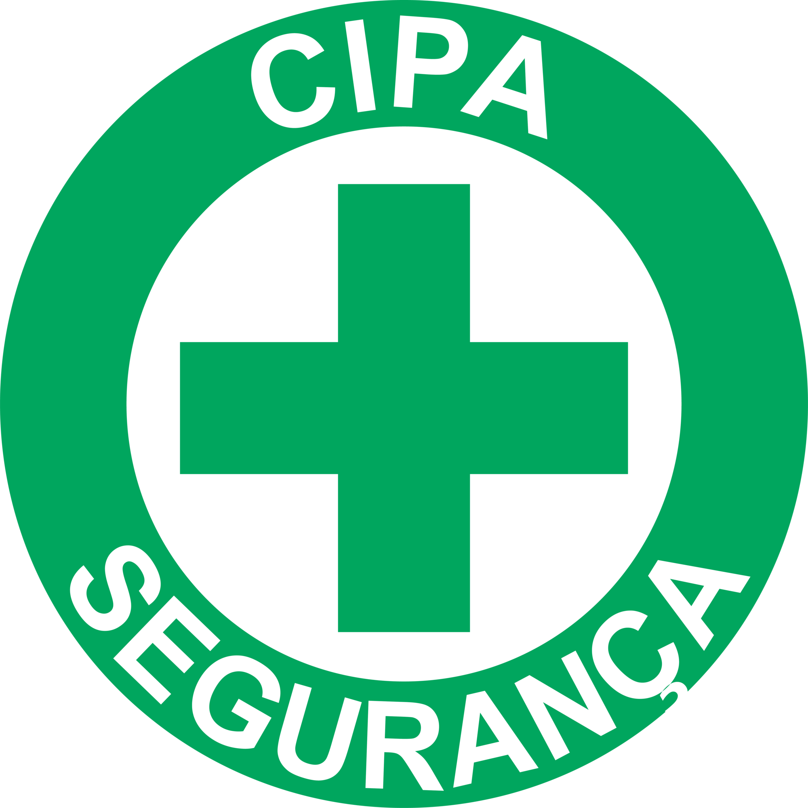

<link rel="stylesheet" href="assets/styles/theme.css">
<link rel="stylesheet" href="assets/styles/informationPages.css">

<article class="mainbody">
    <div class="containers">
        <div class="container-text">
            <h1>Bem vindo ao Portal da CIPA!</h1>
            <p>Bem-vindo ao site da Comissão Interna de Prevenção de Acidentes (CIPA) da Fatec Jahu.</p>
            <p>
                A CIPA é uma comissão composta por representantes dos colaboradores, com o objetivo de prevenir
                acidentes e
                doenças decorrentes do trabalho, tornando o ambiente laboral mais seguro e saudável para todos.
            </p>
            <p>
                Este portal foi desenvolvido para centralizar informações relevantes sobre as atividades da CIPA,
                facilitando o acesso a atas de reuniões, calendários de eventos, documentos importantes e orientações de
                segurança. Nosso propósito é promover a transparência, incentivar a participação ativa de toda a
                comunidade
                acadêmica e fornecer recursos que contribuam para a conscientização e prevenção de acidentes no ambiente
                de
                trabalho
            </p>
        </div>
        <div class="background-image">
            
        </div>
    </div>
</article>